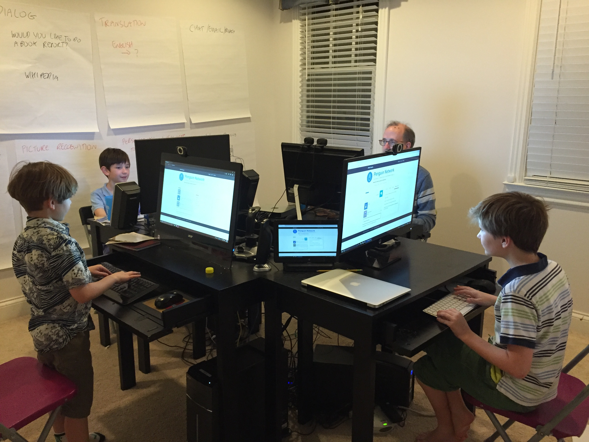
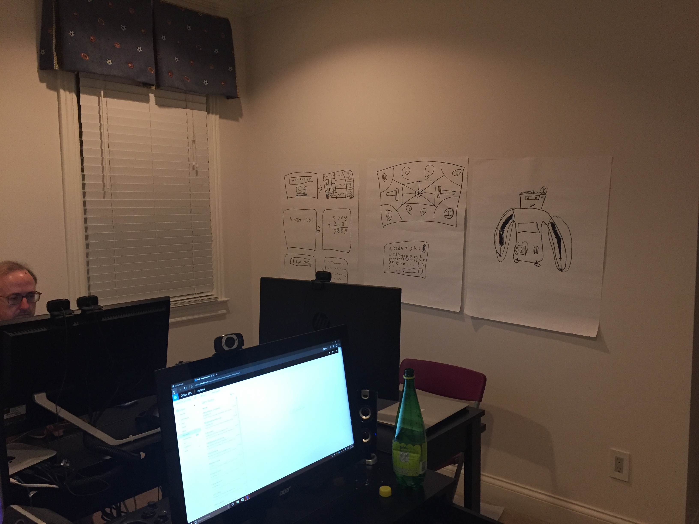
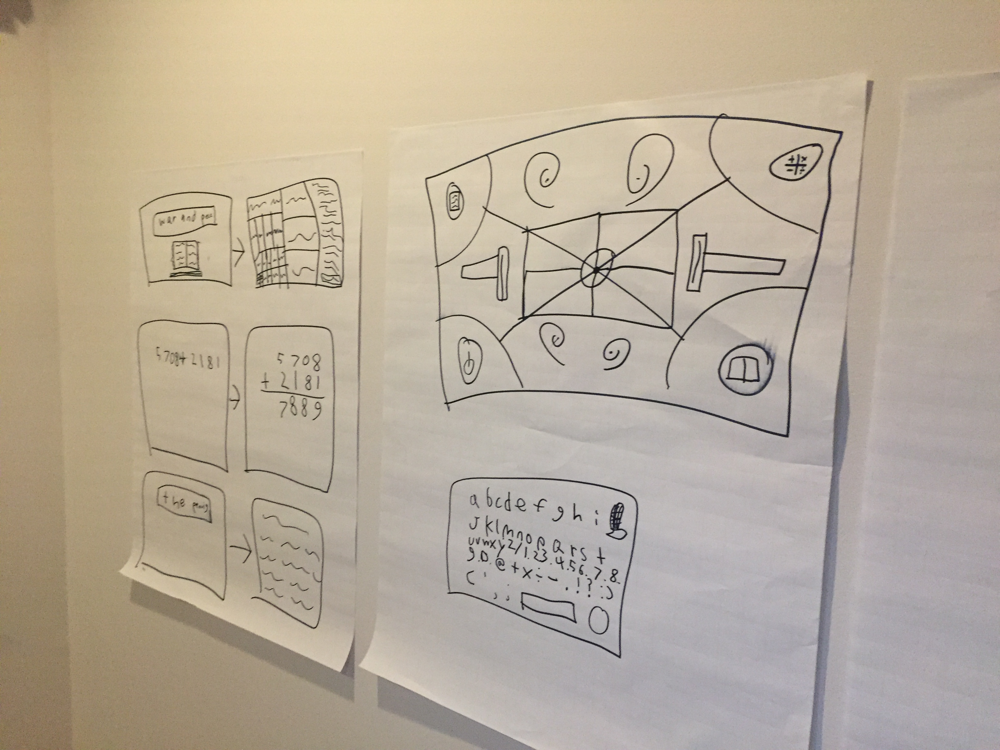

About this hackathon project
This is a hackathon project that was started for the Koding.com HackSummit Hackathon on Saturday February 20 and submitted on Sunday February 21. It was designed and created by a family of an 8 year old, a 9 year old and an 11 year old and their father -- a team of four. Social Media for Under 13s
The global social media market is $20-$50bn in size, with several billion users, and yet only a small fraction of this is knowingly targeted at under 13s. The privacy laws by country requiring parental permissions etc. for any sharing of data make this a hastle that few of the big players have chosen to address. We've tackled this head on, with only the minimum of features provided with original identity that a user might bring to the network, and then we keep it closed so that. But that was just where we started. We really see this as a huge opportunity for cognitive avatars like Penguin who provide help from a composite of different services using a seamless, natural language interface.Technology Overview
The application consists of a multi-room community / chat interface that is supported by multiple parallel integrations with one of the most advanced cognitive platforms for natural language processing and machine learning. It may seem odd to give a 7 year old a chat application that runs on an IBM supercomputer (well our younges team member turned 8 during the competition), but the idea is to provide a pluggable framework that is designed from the start to allow advanced cognitive functions to be plugged in, and even shared by the users. The advancement in cognitive algorithm is so profound, its estimated to surpass the cockroach within years, and primates in the lifetime of the younger team members; therefore, rather than build yet another social network, we've created a platform that is a learning platform for algorithms, that start with some useful basics, but will allow both users and machine to evolve together.The core technology includes:
Evented-IO based on Node.js
An asynchronous, evented back-end based on Node.jsLinux-Caddy-In Memory-FireBase Stack
A back end stack of Linux on the provided Softlayer Koding VM, but with Apache2 swapped out for a lighter weight Go lang reverse proxy server, Caddy, that creates SSL certificates on demand (checkout https://penguin.offgridn.com)
A lightweight front-end web client, with no bulky frameworks, just hand-tailored CSS and streamlined asynchronous communication with the backend.
Custom Integration of Two-Way Real Time Asynchronous Protocol using Standard Web Technologies
A custom two-way real-time communication protocol of XMLHTTP from client to server (to create a single page app for all but these static about pages) and Firebase running over WebSockets for deferred and event-based communication from server back to front-end. For example when requesting a book report, some data comes back straight away, but as the cognitive engine reads and learns more, it submits additional content over the Firebase channel.
Firebase chat
>Firebase API was chosen simply for fast productivity for the Hackathon, the eventual aim would be swap this out for an off-line friendly channel that works over school and neighborhood WiFi, and Bluetooth LE etc. for non connected scenarios.
Firebase chat
A custom set of integrations with IBM Watson Alchemy APIs; the APIs are straightforward, the differentiation here is simply tying them all together in a robust way that works (even after only 24 hours of development) in a very exensible model designed in from the outset. Slack added bots way too late we think, and we are designing in bots and algorithms from the start. Rather than coded logic for commands and logic flow, we use an XML-started but machine learning approach of Alchemy Dialog, which will eventually allow even end-users to add their own jokes instead of Siri's, have a modern answering machine that actually converses with your "callers" in a style that you'd be proud of etc. We kept it straight forward for the hackathon to show a complete independent directory including script, plugin penguin.json file layout, and relied on the platform to provide the UI itself, a content-first appraoach.
The Watson samples online tend to be client-orchestrated, but we wanted a more balanced approach that allows any algorithm provider to offer their own. We don't believe in a future of one Siri or one Cortana, but rather one where certain aspects of the cognitive processing are provided by the then prevailing best algorithm of the day. The source code of this hackathon project shows that that a plugin architecture works and actually allowed us to bring in Dialog, Language, and Insights APIs all from Watson, Chat from Firebase, and Content from Github/the Gutenberg project. This wouldn't be possible without a thoughtfully architected approach
Horizontally Scalable Cotent Sources
Github and the Gutenberg project are used to provide 46,000 works of literature, in a readily indexed form that can be read on demand by the cognitive engine. When you request a "book report", Penguin doesn't just go to its archive, it (re)reads the text, determines the latests concepts and sentiments and provides them back
TED/Google YouTube: It's hard to explain to a child today what a 100 year old text really means, and so we use Watson's built in corpus for the Ted talks to present similar views articulated by the contemporary thespians of today. Give it "A tale of Two Cities", and Penguin will suggest three Ted talks with stated confidence of its conceptual linkage. Perhaps history does repeat.
Standard Express Framework
Six other common Node frameworks are used to support the web server; again, nothing special in these choices, just chosen for familiarity by Hackathon judges and battle-tested maturity: async, body-parser, csv-parse, errorhandler express and request.Javascript Code-First Development
Development is all in Javascript (front and back end with some shared re-use of code where appropriate), and the tooling we used was Visual Studio Code, with Github and Koding used as the storage repositories. The boys run Windows 10, the father runs OS X.Testing was done by the boys and verified with use of both front and back end debugging tools provided in browser (Chrome and Visual Studio Code).
Wireframes were done on flipcharts you can see in the background of our coding room
  Note: These pages are not intended to be part of the end application, just to facilitate judging of the application